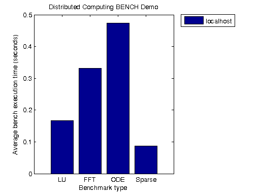

Benchmark the Client Machine
This demo runs a MATLAB® benchmark that has been modified for the Parallel Computing Toolbox™ and executes it on the client machine. Fluctuations of 5 or 10 percent in the measured times of repeated runs on a single machine are not uncommon.
This benchmark is intended to compare the performance of one particular version of MATLAB on different machines. It does not offer direct comparisons between different versions of MATLAB. The tasks and problem sizes change from version to version.
For details about the benchmark, view the code for pctdemo_task_bench.
Related demos:
Contents
Load the Demo Settings and the Data
We obtain the number of benchmark repetitions from the setup function. Note that the demo difficulty level has no effect on the computations we perform in this demo. You can view the code for pctdemo_setup_bench for full details.
difficulty = pctdemo_helper_getDefaults(); [fig, count] = pctdemo_setup_bench(difficulty);
Benchmark Our Machine
We run the benchmark on our machine and calculate the mean time the benchmarks take. You can view the code for pctdemo_task_bench for full details.
times = pctdemo_task_bench(count);
data = mean(times, 1)';
worker_names = {'localhost'};
Plot the Results
We create a simple bar plot depicting the run times of the benchmark tests. You can view the code for pctdemo_plot_bench for full details.
pctdemo_plot_bench(fig, worker_names, data);